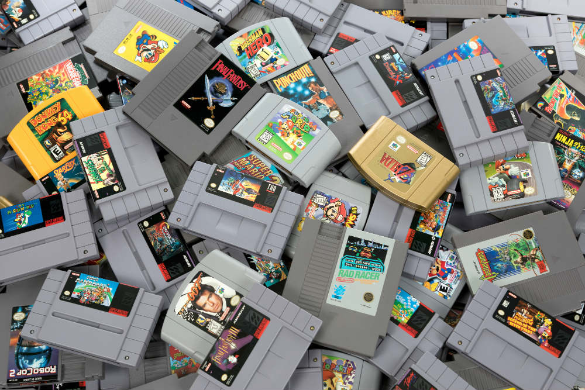

Retro Games Image Map

List of clickable areas on the image:
- Top Right Center / The Legend of Zelda: Ocarina of Time (N64) Type: Rectangle
- Top Center / Super Mario 64 (N64) Type: Rectangle
- Top Left / Donkey Kong 64 (N64) Type: Rectangle
- Bottom Center / GoldenEye 007 (N64) Type: Rectangle
- Bottom Center / Final Fantasy (NES) Type: Polygon
- Bottom Right Center / Castlevania (NES) Type: Polygon
- Bottom Left / Super Mario Kart (SNES) Type: Polygon
- Bottom Right / Super Mario RPG (SNES) Type: Polygon
- Left Center / Super Mario World (SNES) Type: Circle
- Top Left Center / Star Fox (SNES) Type: Circle
- Left Center / Contra III: The Alien Wars (SNES) Type: Circle
- Bottom Center / Mario Party (N64) Type: Circle
- Top Right Corner / Friday the 13th (NES) Type: Circle
- Top Left Center / Zombies Ate My Neighbors (SNES) Type: Polygon
- Bottom Right Corner / Robocop 2 (NES) Type: Polygon
- Right Center / Donkey Kong Country (SNES) Type: Circle
- Top Right Corner / My Pizza Parlor Contact Page - Type: Rectangle